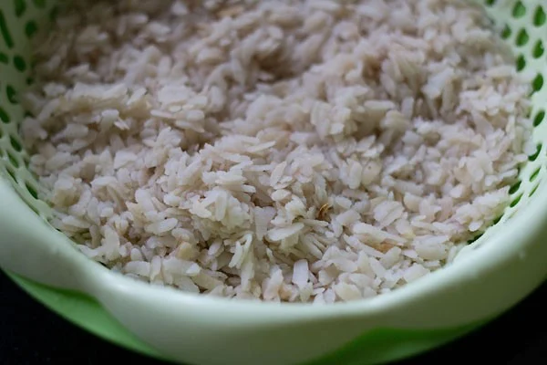
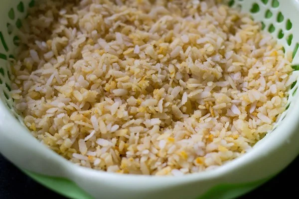
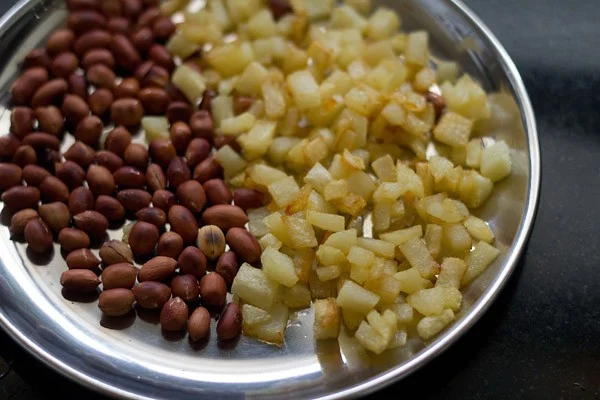
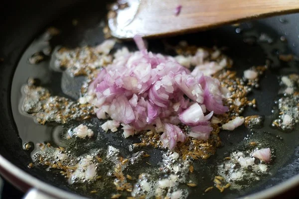
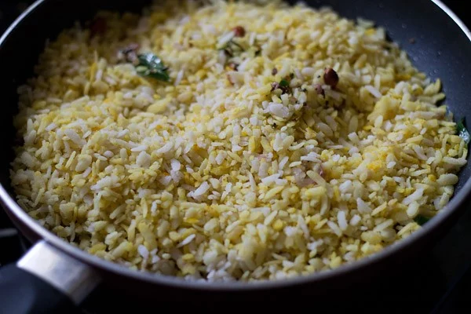
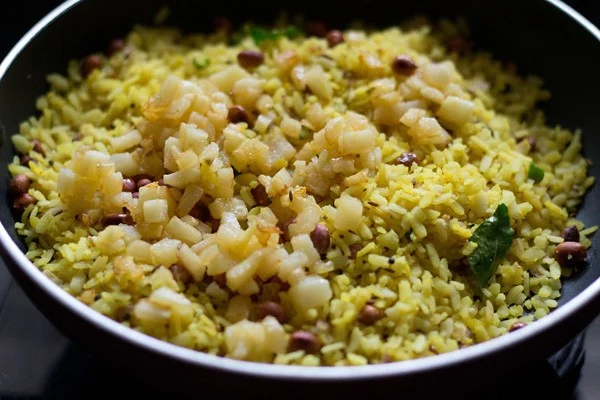
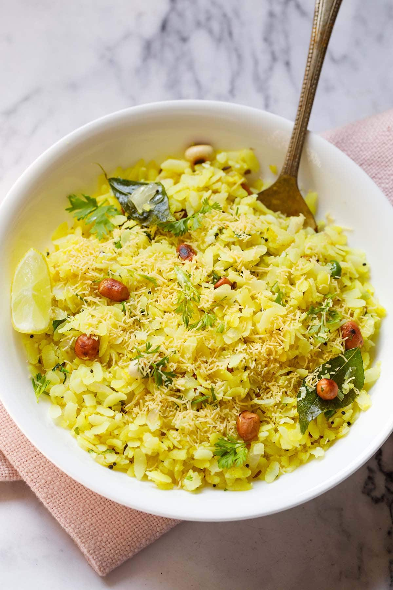

Making kanda poha is quick and simple. Just prepare the ingredients first and then bring everything together in a pan.
1. Pick 1.5 cups thick or medium-thick poha first. Rinse them in clean running water in a strainer or colander twice or thrice. Rinsing in fresh clean water softens them as they absorb water. Make sure not to overdo the rinsing. This will make them mushy and pasty.
2. Sprinkle ¼ teaspoon turmeric powder, 1 teaspoon sugar (or as required) and salt according to taste on the rinsed flattened rice flakes.

3. Gently mix with your hands or with a spoon.
4. Dry roast 2 tablespoons peanuts in a heavy pan on medium-low heat until they become crunchy. Stir often for even cooking of the peanuts. The peanuts should be roasted well and must not have any rawness in them. Roast till they become crunchy and have a few blisters on their skins. Once they have roasted well enough, remove them from the pan and set aside in a plate. Tip: If you like, you can also opt to pan-fry the peanuts in 1 tablespoon of oil. Note: If you have nut allergy or do not like peanuts, simply choose to omit adding them. As a variation, you can also add cashews if you prefer.

5. Peel 1 medium to large size potato and chop into small cubes. In the
same heavy kadai or pan, heat 2 to 2.5 tablespoons oil. Sauté the potatoes
in medium hot oil.
Make sure to cut them in small cubes or else they will take more time to
cook.
6. Sauté them until light golden and crisp. Stir them often while sautéing. Ensure that the potatoes are cooked soft and tender. They should not be undercooked.
7. Once the potatoes become light golden and crisp, remove them with a slotted spoon draining the extra oil. Keep aside with the roasted peanuts.

8. In the same kadai, there will be some oil left. Add ½ teaspoon mustard seeds to the hot oil. If there is no oil, add 1 tablespoon oil and heat it gently.
9. When the mustard seeds splutter, add ½ teaspoon cumin seeds.
10. When the cumin seeds splutter, add ⅓ cup finely chopped onions. Sauté the onions until they soften and become translucent.

11. Now, add 8 to 9 curry leaves (medium to large size), 1 teaspoon
chopped green chilies and the roasted peanuts. Mix well on low heat.
12.Add the rinsed flattened rice.
13. Mix gently with the rest of the ingredients.

14. Add the potatoes and mix very well. Cover the pan tightly with a lid and steam the poha for about 2 minutes on low heat. Remove the lid and check the taste. If required, add more salt and sugar.
Tip: When you add the potatoes, if the flattened rice flakes look dry to you, sprinkle about 1 to 2 tablespoons of water all over. Stir to mix gently and cover the pan with lid and steam for 2 to 3 minutes on a low heat.

15. Garnish with 2 to 3 tablespoons chopped coriander leaves and 2 to 3 tablespoons grated fresh coconut (optional).
